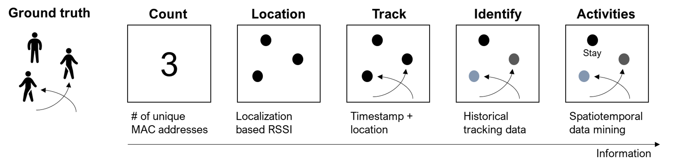

Chapter 4 WiFi Data Analysis
Using WiFi sensing technologies we identify five main metrics on pedestrian behaviors. Here is the figure illustrating the metrics.

- Count: How many people are present?
- Location – Where is that person?
- Track – Where was the person before?
- Identity – Who is the person?
- Activities – What is the person doing?
The following sections cover how to generate the metrics.
4.6 Activities
You can add parts to organize one or more book chapters together. Parts can be inserted at the top of an .Rmd file, before the first-level chapter heading in that same file.
Add a numbered part: # (PART) Act one {-} (followed by # A chapter)
Add an unnumbered part: # (PART\*) Act one {-} (followed by # A chapter)
Add an appendix as a special kind of un-numbered part: # (APPENDIX) Other stuff {-} (followed by # A chapter). Chapters in an appendix are prepended with letters instead of numbers.